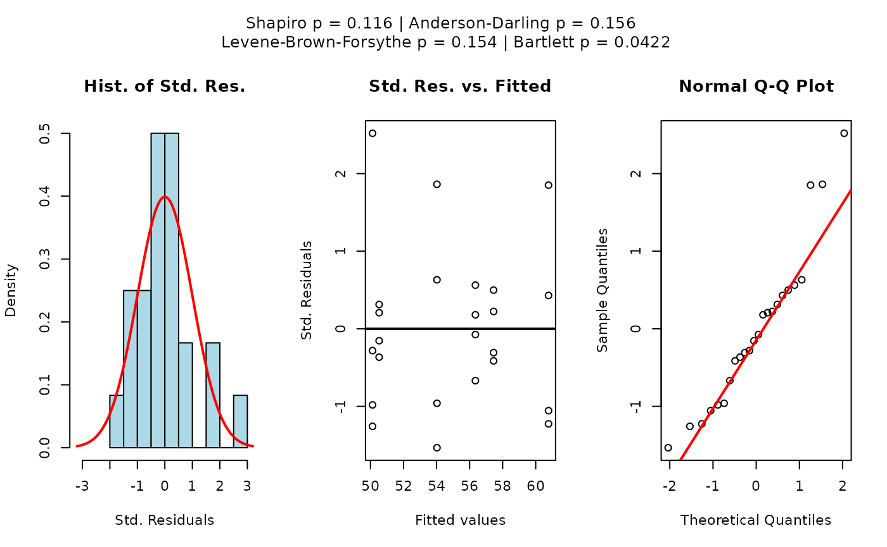
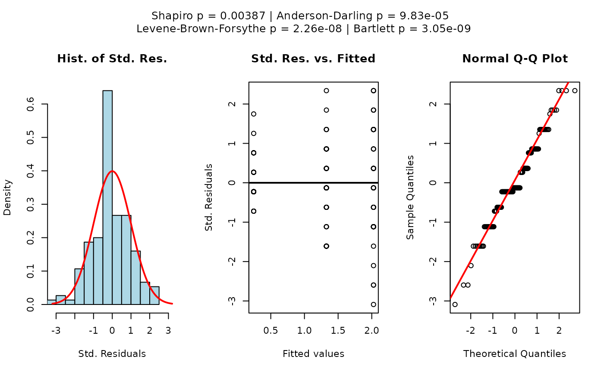
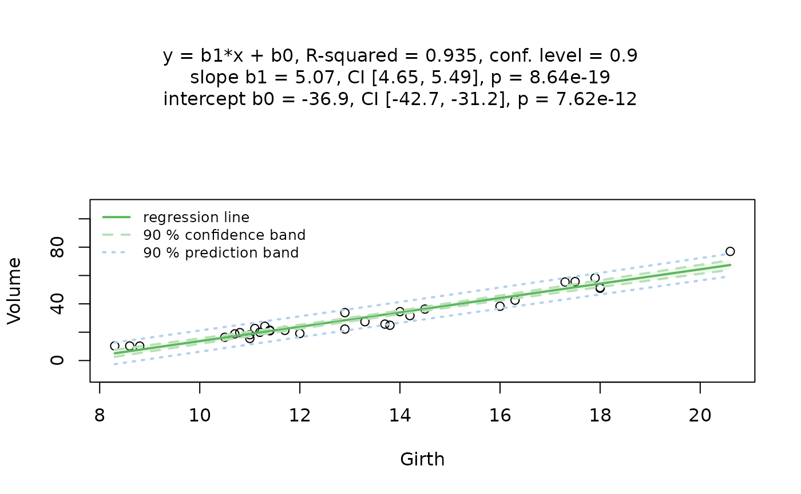
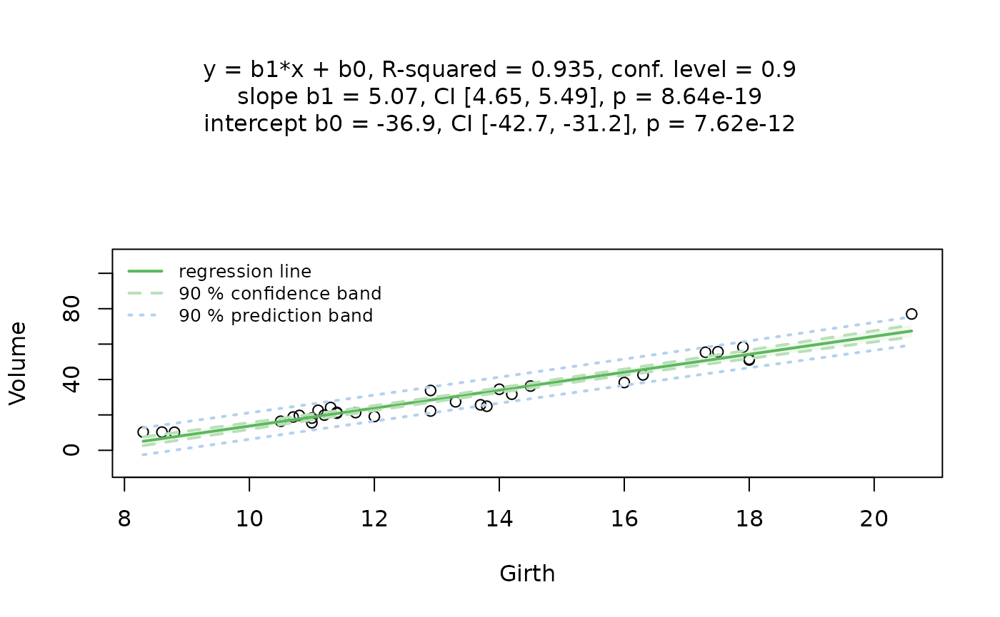
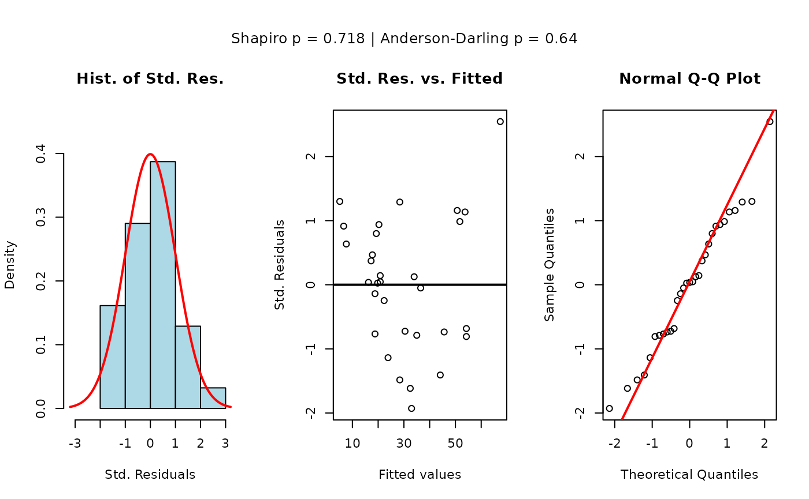
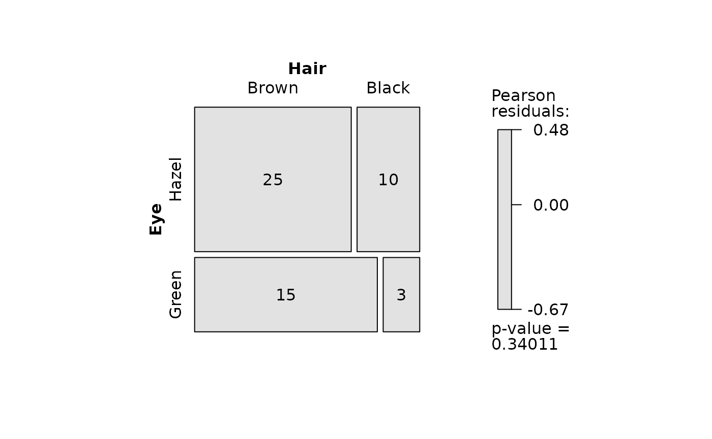
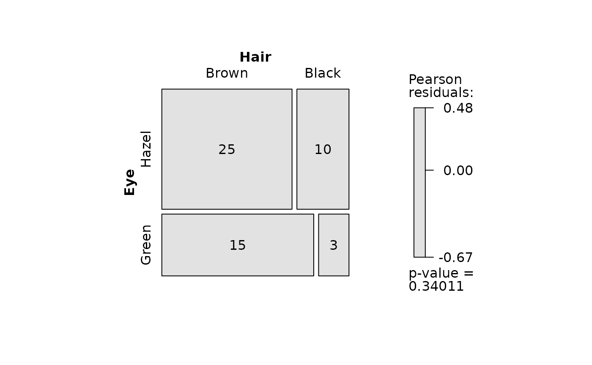

Abstract
The R package visStatistics provides means to quickly visualise and analyse raw data.Based on a decision tree it picks the statistical hypothesis test with the highest statistical power between the dependent variable (response) named varsample and the independent variable (feature) named varfactor in a data.frame named dataframe. A minimal function call has the structure:
visstat(dataframe,varsample,varfactor)
Data in the provided dataframe must be structured column wise, where varsample and varfactor are the character strings of the column names of the dependent (response) and independent (feature) variable respectively.
The choice of statistical tests performed by the core function visstat() depends if the data is numerical or categorical, the number of levels whilst dealing with categorical data and the data distributions (normally distributed versus non-normally distributed).
Data of class "numeric" or "integer" will be referred in the reminder of this vignette as “numerical”, data of class "factor" will be referred in the remainder of this vignette as “categorical”.
The function returns the corresponding test statistics including eventual post-hoc-analysis and generates a graph showing key statistics of the underlying test.
visStatistics offers a fully automated workflow. It has been successfully applied for the unbiased analysis of medical raw data.
The remainder of this vignette focuses on the the algorithm underlying the decision tree of vistat(), whilst a call to ?visstat documents all parameter settings of the function.
All statistical tests are called with their default parameter sets, with the exception of
Comparing means and medians
If the feature varfactor is a categorical variable of class "factor" with two or more levels and the response varsample is a numerical variable of class "numeric" or "integer", tests are applied to compare the means or medians.
Two sample tests: Welch’s t-test or Wilcoxon rank-sum test
If the feature varfactor is of class "factor" with exactly two levels and the response varsample is numerical, either Welch’s t-test or the Wilcoxon rank-sum test are performed. The choice follows the algorithm below:
If the sample size for both levels is bigger than 100, perform always the
t.test()(Lumley et al. 2002).-
If the sample size of at least one of the levels is smaller than 100, check first for normality of both levels with the Shapiro-Wilk Normality Test (
shapiro.test()):If the p-values of the
shapiro.test()of both levels are bigger than the error probability1-conf.level, choose Welch’s t-Test (t.test()).If the p-values of at least one of the levels in the
shapiro.test()are smaller than the error probability1-conf.level, a Wilcoxon rank sum test (wilcox.test()) is executed.
Note that visstat() only performs unpaired tests.
The graphical representation consists of box plots overlayed with jitter plots showing each data point. In the case of the t-test.(), additionally theconf.level\*100 % -confidence intervals are shown.The test statistics of the chosen test as well as the summary statistics of the generated box plots is generated and returned as a list.
Examples
Welch’s t-test calling t.test()

# Print the test statistics
ttestStatistics
#> $`dependent variable (response)`
#> [1] "mpg"
#>
#> $`indepedent variables (parameters)`
#> [1] 1 0
#> Levels: 0 1
#>
#> $`t-test-statistics`
#>
#> Welch Two Sample t-test
#>
#> data: x1 and x2
#> t = -3.7671, df = 18.332, p-value = 0.001374
#> alternative hypothesis: true difference in means is not equal to 0
#> 95 percent confidence interval:
#> -11.280194 -3.209684
#> sample estimates:
#> mean of x mean of y
#> 17.14737 24.39231
#>
#>
#> $`Shapiro-Wilk-test_sample1`
#>
#> Shapiro-Wilk normality test
#>
#> data: x
#> W = 0.97677, p-value = 0.8987
#>
#>
#> $`Shapiro-Wilk-test_sample2`
#>
#> Shapiro-Wilk normality test
#>
#> data: x
#> W = 0.9458, p-value = 0.5363
# Set the confidence level explicitly
ttestStatistics <- visstat(mtcars, "mpg", "am", conf.level = 0.99)
Wilcoxon rank-sum test (calling wilcox.test())
grades_gender <- data.frame(
Sex = as.factor(c(rep("Girl", 20), rep("Boy", 20))),
Grade = c(
19.3, 18.1, 15.2, 18.3, 7.9, 6.2, 19.4,
20.3, 9.3, 11.3, 18.2, 17.5, 10.2, 20.1, 13.3, 17.2, 15.1, 16.2, 17.3,
16.5, 5.1, 15.3, 17.1, 14.8, 15.4, 14.4, 7.5, 15.5, 6.0, 17.4,
7.3, 14.3, 13.5, 8.0, 19.5, 13.4, 17.9, 17.7, 16.4, 15.6
)
)
wilcoxonStatistics <- visstat(grades_gender, "Grade", "Sex")
More than two samples: One-way test and ANOVA or Kruskal-Wallis test
If the independent, categorical variable varfactor has more than two levels and the dependent variable varsample is numerical, visstat() performs an analysis of variance (ANOVA, see aov()) under the condition that the underlying assumptions are met:
Normality of the standardized residuals and
homoscedasticity.
If only 1. is met, visstat() performs a one-way test (see oneway.test()). If 1. does not apply, a Kruskal-Wallis test (kruskal.test()) is used. These assumptions are tested by the function visAnovaAssumptions().
Residual analysis
Function visAnovaAssumptions() checks for the normality of the standardised residuals of the ANOVA fit generated by the function aov() . To do so it applies both the Shapiro-Wilk-test shapiro.test() and the Anderson-Darling-Test ad.test() on the standardised residuals. Furthermore it visualises the standardised residuals versus the fitted mean values of the linear model for each level of varfactor. Additionally the normal QQ plot of the standardised residuals is generated.
Homoscedacity: homogeneity of variances in each level: Bartlett test
Both aov() and oneway.test() check, whether two or more samples from normal distributions have the same mean. Whereas aov() requires homogeneity of variances in each level (group), the oneway.test() does not assume that the variances in each level are necessarily equal. Homoscedasticity is assessed using the Bartlett test, see bartlett.test(), under the null hypothesis that the variances in each of the levels are the same.
One-way test and ANOVA
Depending on the p-value of the bartlett.test() the appropriate test is shown in the title:
If the p-value of the
bartlett.test()is bigger than1-conf.level, we can assume homogeneity of variances in each level (group) and the p-values ofaov()is displayed.Otherwise homoscedacity can not be assumed and the p-value of
oneway.test()is reported.
To generate Sidak corrected confidence intervals, we calculate the corrected probability of error for the construction of M confidence intervals, \[\alpha_{Sidak}=1-conf.int^{1/M}.\] Here, \(M\) is the number of levels of the independent variable (Šidák 1967). Inserting the corrected \(\alpha_{Sidak}\) into the standard formula for confidence intervals we obtain the Sidak corrected boundaries of the confidence interval \[ \left[{{\overline {x}}-t_{\left(1-{\frac {\alpha_{Sidak} }{2}};n-1\right)}{\frac {s}{\sqrt {n}}}\ ;\ {\overline {x}}+t_{\left(1-{\frac {\alpha_{Sidak} }{2}};n-1\right)}{\frac {s}{\sqrt {n}}}}\right], \]
where \(\overline {x}\) is the mean, \(s\) the standard deviation and \(n\) the number of entries of each group (level).
Note that the current structure of visstat() does not allow the study of interactions between the different levels of the independent variable.
Post-hoc analysis: Tukey Honest Significant Differences
We use the Tukey Honest Significant Differences TukeyHSD() to create a set of confidence intervals on the differences between the means of the levels of a factor with the specified family-wise probability conf.level. This list of confidence intervals accompanied by the adjusted p-values is returned. If the difference between two levels is significant at the given conf.level, the displayed letters at the bottom of the graph between the two levels will differ. Note that the Tukey HSD requires homoscedacity of the samples. In a future revision of visStatistics an appropriate post-hoc test for non homogeneous data will be included.
Kruskal-Wallis-Test
If the p-values of the standardized residuals calculated by shapiro.test() or ad.test() are smaller than the error probability 1-conf.level, a normal distribution of the residuals can not be assumed. In this case, visstat() chooses a non-parametric alternative, the Kruskal-Wallis rank sum test. kruskal.test() tests the null that the medians are the same in each group (level). As post-hoc-analysis the pairwise Wilcoxon rank sum test pairwise.wilcox.test() applying the default Holm method for multiple comparisons(Holm 1979) is used. If the Holm corrected p-value for a pair is smaller than 1-confint, the green letters below the corresponding two box plots will differ. Otherwise the graphical representation of the Kruskal-Wallis test is analogue to the above described Wilcoxon rank sum test. A list with the test statistics of the Kruskal-Wallis rank sum test as well as the p-values of the pairwise comparisons adjusted by the Holm method is returned.
Examples
The npk data sets reports the yield of peas in pounds/block on 6 blocks.
One way test
oneway_npk <- visstat(npk, "yield", "block")
The post-hoc analysis with TukeyHSD() reveals no significant difference between the yield in all blocks (all green letters are the same). #### ANOVA
To stabilize the variance we transform the count data with the square root.
InsectSprays_tr <- InsectSprays
InsectSprays_tr$count <- sqrt(InsectSprays$count)
visstat(InsectSprays_tr, "count", "spray") 

In the above example the scatter plots of the standardized residuals, the QQ-plot and the p-values of both Shapiro-Wilk test and Anderson-Darling tests are greater than the probability of error \(\alpha=0.05\). Therefore we can assume that the residuals are normally distributed. At the given confidence level the homogeneity of variances can not be assumed (\(p <\alpha\) as calculated with the bartlett.test()), and the p-value of the oneway.test() is displayed.
Kruskal-Wallis rank sum test
The iris data set gives the measurement of the petal width in cm for three different iris species.
visstat(iris, "Petal.Width", "Species")
In the iris data example, both the graphical analysis by the scatter plots of the standardized residuals and the QQ -plot as well as the p-values of Shapiro-Wilk-test and Anderson-Darling test suggest that we can not assume that the residuals are normally distributed. Therefore visstat switches to the non parametric alternative kruskal.test().
Linear Regression
If the feature varfactor and the response varsample have only one level of type numerical or integer, visstat() performs a simple linear regression
Residual analysis
visstat checks the normal distribution of the standardized residuals derived from lm() both graphically and with the Shapiro-Wilk- and Anderson-Test (analogue to section @ref(aov) ). If the p-values of the null that the standardized residuals are normally distributed of both Shapiro-Wilk and Anderson-Test are greater than 1-conf.int, the title of the residual plot will display the message “Requirements regression not met”.
Independent of the residual analysis outcome, visstat()` performs in the subsequent step the regression itself. The title of the graphical output lists the chosen confidence level conf.level, the regression parameter accompanied by their confidence levels and p-values as well as the adjusted \(R^2\). The graph shows the raw data, the regression line and both the confidence and prediction bands corresponding to the chosen conf.level. The function returns a list with the test statistics of the linear regression, the p-values of the normality tests of the standardized residuals and the pointwise estimates of the confidence and prediction band.
Example
cars
The cars data set reports the speed in mph of cars and the distances (dist) in ft taken to stop.
linreg_cars <- visstat(cars, "dist", "speed")

Increasing the confidence level conf.level from the default 0.95 to 0.99 leads two wider confidence and prediction bands:
linreg_cars <- visstat(cars, "dist", "speed", conf.level = 0.99)
# Extract the test statistics
linreg_cars$anderson_darling_test_residuals
#>
#> Anderson-Darling normality test
#>
#> data: rstandard(lm(y ~ x))
#> A = 0.8005, p-value = 0.03555
linreg_cars$shapiro_test_residuals
#>
#> Shapiro-Wilk normality test
#>
#> data: rstandard(lm(y ~ x))
#> W = 0.94518, p-value = 0.0217The linear regression model explains 64% of the total variance of the dependent variables distance named “dist”. p-values greater than conf.level in both Anderson-Darling normality test and the Shapiro-Wilk test of the standardized residuals suggest that the normality assumption underlying the linear regression is met.
trees
The trees data set provides measurements of the diameter (named “Girth”) in inches and height in feet of black cherry trees.
linreg_cars <- visstat(trees, "Height", "Girth", conf.level = 0.9)

Both the graphical analysis of the standardized residuals and p-values smaller than conf.level in the Anderson-Darling normality test and the Shapiro-Wilk test of the standardized residuals suggest that the condition of normally distributed residuals of the regression model is not met. Furthermore the linear regression model explains only 24% of the total variance of the dependent variables “Height” of the cherry trees. The user should might consider other regression models. This further tests are not provided by visstat().
\({\chi}^2\)- and Fisher Test
If both the feature varfactor and the response are varsample are categorical of type factor, visstat performs a test for the independence of count data. Based on Cochran’s rule (Cochran 1954), either a \({\chi}^2\)- or a Fisher Test are performed: - If more than 20 percent of all cells have a count smaller than 5, fisher.test() is performed and displayed, otherwise the chisqu.test().
In both cases a grouped column charts with the p-value of the corresponding test in the title and a mosaic plot showing Pearson’s residuals (for details see documentation of function mosaic() in the vcd package ) are generated.
Transforming contingency tables
Count data are often presented as multidimensional arrays, so called contingency tables, whereas visstat() requires a data.frame with a column structure. Arrays can be transformed to this column wise structure with the helper function countsToCases()
Example
HairEyeColorDataFrame <- countsToCases(as.data.frame(HairEyeColor))Pearson’s Chi-squared test and mosaic plot with Pearson residuals
HairEyeColorDataFrame <- countsToCases(as.data.frame(HairEyeColor))
visstat(HairEyeColorDataFrame, "Hair", "Eye")

Fisher’s exact test and mosaic plot with Pearson residuals
HairEyeColorMaleFisher <- HairEyeColor[, , 1]
# slicing out a 2 x2 contingency table
blackBrownHazelGreen <- HairEyeColorMaleFisher[1:2, 3:4]
blackBrownHazelGreen <- countsToCases(as.data.frame(blackBrownHazelGreen))
fisher_stats <- visstat(blackBrownHazelGreen, "Hair", "Eye") 

# fisher_stats #uncommenting prints out summary statisticsSaving the graphical output
The generated graphs can be saved in the file formats supported by Cairo(): “png”, “jpeg”, “pdf”, “svg”, “ps” and “tiff”. In the following example we save the graphics files in the output format “png” to the plotDirectory tempdir(). The applied naming convention of the graphics file reflects the chosen statistical test and the variable names.
Remove the graphical output from plotDirectory
file.remove(file.path(tempdir(), "chi_squared_or_fisher_Hair_Eye.png"))
#> [1] TRUE
file.remove(file.path(tempdir(), "mosaic_complete_Hair_Eye.png"))
#> [1] TRUEOverview of implemented tests
t.test(), wilcox.test(), aov(), kruskal.test(), lm(),fisher.test(), chisqu.test()
Implemented tests to check the normal distribution of standardized residuals
shapiro.test() and ad.test()
Implemented post-hoc tests
TukeyHSD() for aov() and pairwise.wilcox.test() for kruskal.test().
Bibliography
Cochran, William G. and. 1954. “The combination of estimates from different experiments.” Scandinavian Journal of Statistics 10 (1): 101–20. https://doi.org/10.2307/3001666.
Holm, S. 1979. “A Simple Sequentially Rejective Multiple Test Procedure.” Scandinavian Journal of Statistics 6: 65–70.
Lumley, Thomas, Paula Diehr, Scott Emerson, and Lu Chen. 2002. “The importance of the normality assumption in large public health data sets.” Annual Review of Public Health 23: 151–69. https://doi.org/10.1146/annurev.publhealth.23.100901.140546.
Šidák, Zbyněk. 1967. “Rectangular Confidence Regions for the Means of Multivariate Normal Distributions.” Journal of the American Statistical Association 62 (318): 626–33. https://doi.org/10.1080/01621459.1967.10482935.